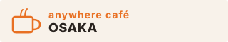
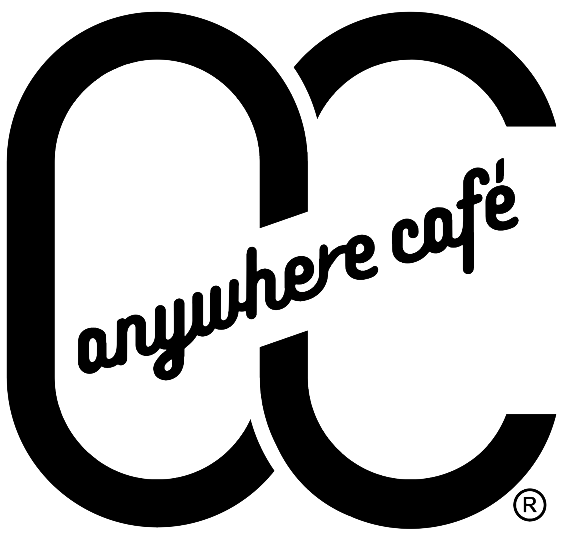

旅の目的診断
3つの質問に答えるだけで、
あなたにぴったりの旅のテーマと
360°観光映像が見つかります。
※ 所要時間 30秒程度
anywhere café OSAKA


3つの質問に答えるだけで、
あなたにぴったりの旅のテーマと
360°観光映像が見つかります。
※ 所要時間 30秒程度
anywhere café OSAKA
あなたにおすすめの観光地はこちら
👆 タップして映像を見る